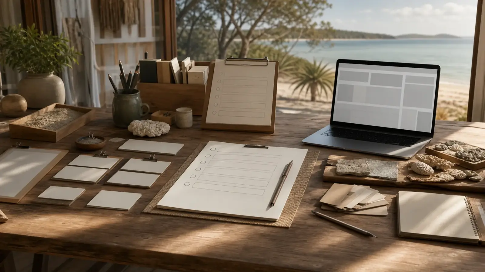

Chapter 12 / 15 · Local capability
Make the island a place that can make
Use ready SET Co-op and Straddie Maker-Space Lab to grow the workforce, systems and compliance capacity alongside the research.

Skills pipeline
| Learning stream | Example portfolio evidence |
|---|---|
| Digital design and simulation | CAD, parametric models, versioned simulations, design review |
| Material testing | Sample provenance, calibrated tests, laboratory safety, traceable results |
| Robotics and instrumentation | Bench-scale controls, sensor calibration, fault injection, maintenance |
| Fabrication and repairs | Competency records, supervised safe work, quality documentation |
| Infrastructure assurance | Risk registers, permits, asset records, inspection and incident reporting |
Two complementary platforms
Straddie Maker-Space Lab ↗ is the proposed practical space for learning, making, repair and supervised prototypes. ready SET Co-op ↗ is the proposed employment, training and compliance coordination pathway. Link demonstrated competencies to real roles, not just completion badges.
Use licensed trades, accredited training providers and qualified professionals for regulated tasks. Record scope of competence, supervision, certifications, safety induction, worker wellbeing and progression. No existing partnership or hiring promise is implied.
Ownership and opportunity
Develop a local supply chain of technicians, software developers, fabrication workers, researchers, contractors and operators. Explore co-operative participation, fair contracts, transparent costs, and business vehicles appropriate to funded research and regulated infrastructure delivery.
Marine robotics and space analogues
Apply this research stream to robotic aquaculture and modular construction, with separate marine costs, permissions, environmental limits and off-world qualification requirements.